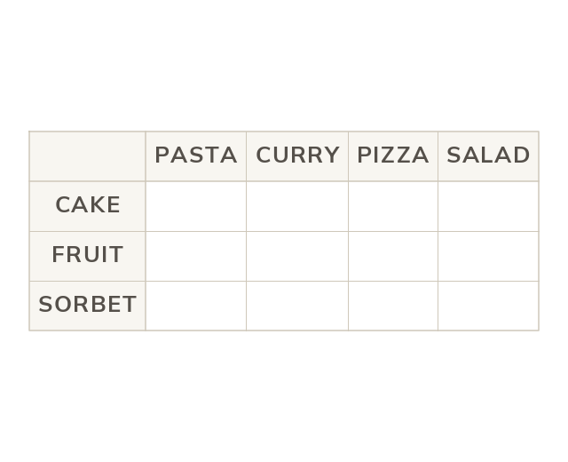
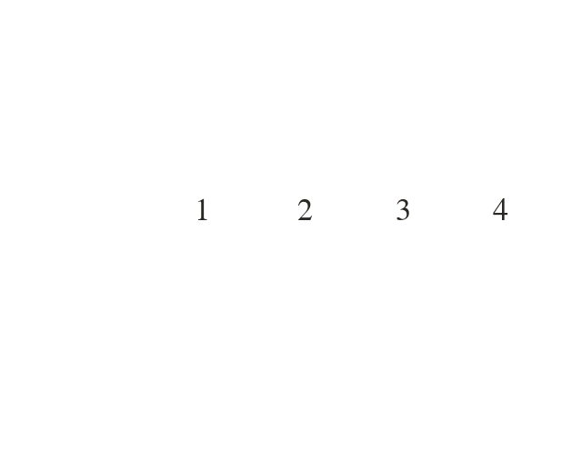
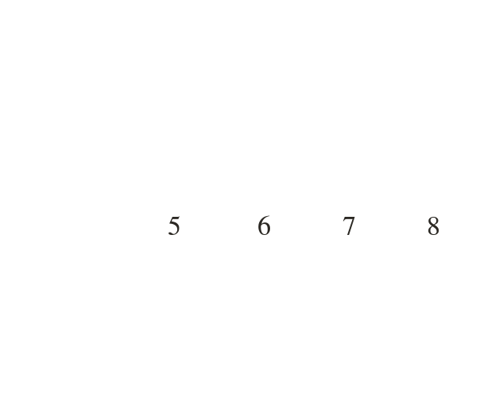
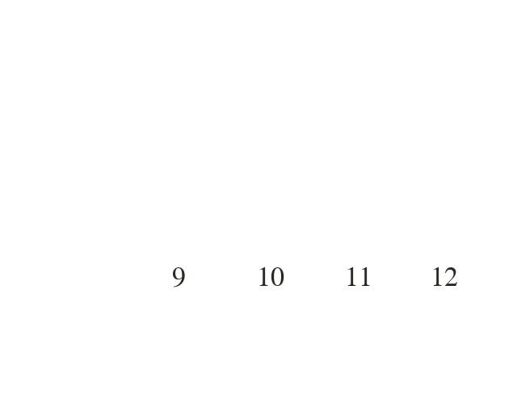

Multiply the choices
One choice in ways and another in ways give together. The rule extends to more choices.
If one choice can be made in ways and a second in ways, the two together can be made in ways. Every main pairs with every dessert, so the pairs fill a grid, and the rule extends to three or more choices.